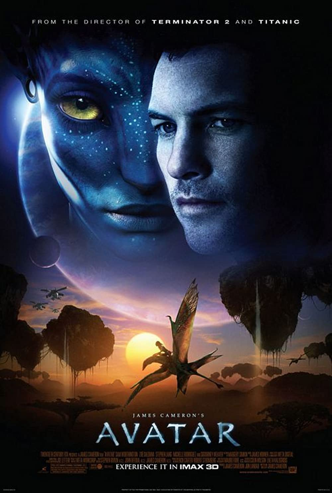

Omiljeni filmovi
| Ime filma |
Kratak opis |
Zanr |
Datum izlaska |
Cover slika |
Link |
| Titanic |
Titanik (engl. Titanic) je američki film iz 1997. godine.
Tema filma je romantična priča o bogatoj devojci i siromašnom momku
koji se susreću i zaljubljuju na „nepotopivom brodu“,
dok posada broda žuri da obori dotadašnji rekord u putovanju preko
Atlantika (na putu im stoji „samo“ santa leda).
Budžet filma je iznosio 200 miliona dolara, a zarada 2,201 milijardi dolara
i bio je najuspešniji film po zaradi do Kameronovog Avatara 2010. godine |
Drama
Romansa
Istorijski
|
17.12.1997. |
 |
Detaljnije pogledati ovdje. |
| Avatar |
Radnja filma "Avatar" smeštena je u 22. vek, na malu planetu Pandora,
koja je naseljena rasom Na’vi, ogromnim plavim humanoidima, miroljubivim
dok ih neko ne napadne. Ljudi ne mogu da dišu na planeti Pandora pa su genetskim
inženjeringom stvorili hibrid poznat kao avatar, ljudski duh u telu vanzemaljca.
Džejk Suli, invalid i ratni veteran, dobrovoljno se prijavio da živi na planeti
Pandori kao avatar. Zaljubljuje se u princezu Na’vi plemena i postaje deo sukoba
između njihovog i našeg sveta. |
Avantura
Akcija
Naucna fantastika
|
16.12.2009. |
 |
Detaljnije pogledati ovdje. |
| Apocalypto |
Kraljevstvo Maja se nalazi na apsolutnom vrhuncu bogatstva i snage,
ali vođe su ubeđene da će, ukoliko ne budu sagrađeni novi hramovi i prinete nove ljudske žrtve,
prinosi biti manji i ljudi će patiti. Jaguarova Šapa (Rudi Jangblad) je miroljubivi lovac iz
udaljenog šumskog plemena čiji će se život zauvek promeniti. Kada selo Jaguarove Šape bude napadnuto,
a on pripremljen da bude žrtva koju su božanstva naroda Maja tražila, hrabri mladi ratnik biva
primoran da krči sebi put kroz užasan novi svet pun straha i diktature. Da bi spasao svoju trudnu ženu i
malog sina, Jaguarova Šapa će morati da pobegne najmoćnijim ratnicima u kraljevstvu Maja koristeći svoje
dobro poznavanje šuma da bi preokrenuo situaciju i nadmudrio one koji bi ga radije videli mrtvog nego slobodnog. |
Avantura
Akcija
Drama
|
08.12.2006. |
|
Detaljnije pogledati ovdje. |
| Shutter island |
Dvojica američkih šerifa, Tedi Danijels (Leonardo Dikaprio) i Čak Ojl (Mark Rafalo), odlaze 1954.
u psihijatrijsku bolnicu Ešklif na jednom izolovanom ostrvu blizu Masačusetsa sa zadatkom da istraže slučaj Rejčel Solando
(Emili Mortimer), pacijentkinje koja je nestala iz zatvorene sobe. Psihijatar, dr Džon Koli (Ben Kingsli), objašnjava
da je nestala pacijentkinja hospitalizovana nakon sloma koji je doživela kada joj se utopilo troje dece. Istražitelji nailaze
na poteškoće, a Danijelsu jedne noći njegova bivša žena, koja je poginula u požaru, u snu saopštava da je Rejčel još živa.
Kasnije istražitelji dolaze do otkrića da se u Ešklifu vrše eksperimenti, što sve zajedno pogubno deluje na Danijelsovu psihu. |
Triler
Misterija
|
19.02.2010. |
 |
Detaljnije pogledati ovdje. |
| The invisible guest |
Adrian Doria, mladi preduzetnik, se jednog dana budi u hotelskoj sobi pored beživotnog tela svoje ljubavnice.
Pošto je optužen za ubistvo, odlučuje da unajmi Virhiniju Gudmen, najbolju pravnicu za pripremu svedoka u zemlji.
Tokom jedne noći, oboje će pokušati da iznađu neku razumnu činjenicu koja bi ga oslobodila zatvora.
Ali pojava novog svedoka optužbe preti da uništi osmišljenu strategiju odbrane i primorava ih da u svojim planovima vrate vreme unazad
i ponovo poslože delove nerešive slagalice... |
Triler
Misterija
|
06.07.2017. |
 |
Detaljnije pogledati ovdje. |